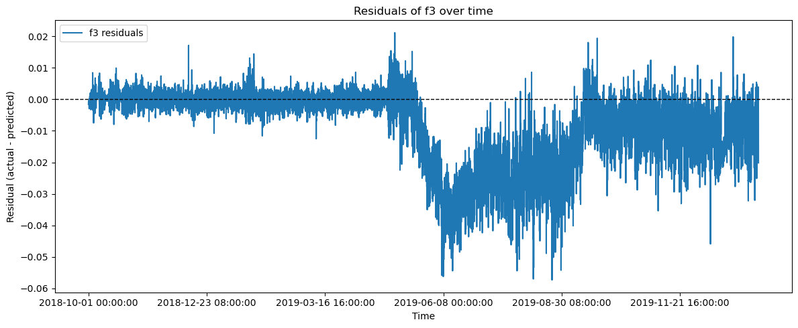
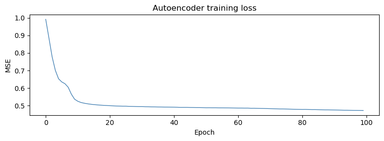
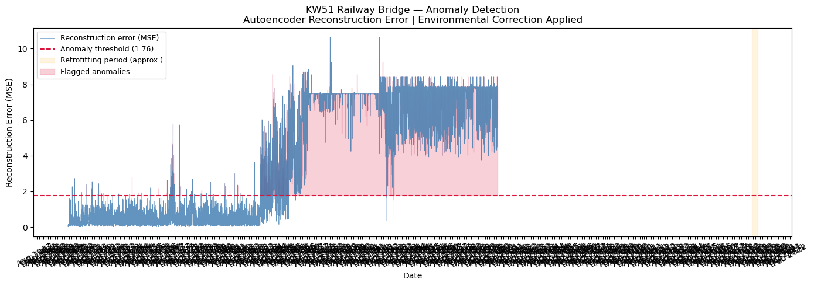

import pandas as pd
from sklearn.ensemble import RandomForestRegressorAutoencoder
df = pd.read_csv(r'E:\SHM_ML\data\cleaned\cleaned_data.csv', index_col=0)df| f3 | f5 | f6 | f9 | f10 | f11 | f12 | f13 | tBD31A | rhBD31A | tVL | rhVL | vpVL | raVL | wsVL | wdVL | |
|---|---|---|---|---|---|---|---|---|---|---|---|---|---|---|---|---|
| timestamp | ||||||||||||||||
| 2018-10-01 00:00:00 | 1.892065 | 2.591636 | 2.919671 | 4.104634 | 4.292805 | 4.806421 | 5.324662 | 6.310306 | 10.100000 | 81.000000 | 10.825000 | 89.333336 | 1159.144738 | 0.0 | 9.40 | 293.00 |
| 2018-10-01 01:00:00 | 1.892065 | 2.591636 | 2.919671 | 4.104634 | 4.292805 | 4.806421 | 5.324662 | 6.310306 | 10.000000 | 85.000000 | 10.241667 | 92.750000 | 1157.524605 | 0.1 | 10.30 | 295.00 |
| 2018-10-01 02:00:00 | 1.892065 | 2.591636 | 2.919671 | 4.104634 | 4.292805 | 4.806421 | 5.324662 | 6.310306 | 9.900000 | 91.000000 | 10.150000 | 92.000000 | 1141.142430 | 0.0 | 10.40 | 284.00 |
| 2018-10-01 03:00:00 | 1.892065 | 2.591636 | 2.919671 | 4.104634 | 4.292805 | 4.806421 | 5.324662 | 6.310306 | 9.800000 | 89.000000 | 10.166666 | 91.083336 | 1131.033604 | 0.3 | 11.60 | 296.00 |
| 2018-10-01 04:00:00 | 1.892065 | 2.591636 | 2.919671 | 4.104634 | 4.292805 | 4.806421 | 5.324662 | 6.310306 | 9.800000 | 90.000000 | 9.558333 | 93.166664 | 1110.625906 | 0.2 | 9.60 | 283.00 |
| ... | ... | ... | ... | ... | ... | ... | ... | ... | ... | ... | ... | ... | ... | ... | ... | ... |
| 2020-01-15 19:00:00 | 1.888801 | 2.555565 | 2.986277 | 4.078602 | 4.386448 | 4.942893 | 5.440576 | 6.436793 | 9.641429 | 83.304917 | 8.386441 | 83.342373 | 918.137648 | 0.0 | 1.96 | 200.08 |
| 2020-01-15 20:00:00 | 1.887610 | 2.586921 | 2.982070 | 4.080208 | 4.386448 | 4.940309 | 5.426145 | 6.398893 | 9.143141 | 80.168936 | 7.545000 | 84.875000 | 882.549401 | 0.0 | 1.51 | 187.83 |
| 2020-01-15 21:00:00 | 1.886253 | 2.581889 | 2.987133 | 4.078480 | 4.386448 | 4.908271 | 5.432978 | 6.410531 | 8.795149 | 82.076947 | 6.301667 | 89.455000 | 853.705976 | 0.0 | 1.07 | 199.95 |
| 2020-01-15 22:00:00 | 1.888356 | 2.566954 | 2.987248 | 4.080275 | 4.386448 | 4.940258 | 5.449368 | 6.425065 | 8.367961 | 83.432317 | 5.583333 | 93.038333 | 845.126865 | 0.0 | 0.91 | 204.28 |
| 2020-01-15 23:00:00 | 1.871882 | 2.566954 | 2.987134 | 4.077780 | 4.386448 | 4.940258 | 5.449368 | 6.425065 | 7.936330 | 85.265024 | 5.486667 | 92.815000 | 837.557894 | 0.0 | 0.90 | 201.26 |
11328 rows × 16 columns
We are going to separate the Pure vibration frequency
freq_cols = ['f3', 'f5', 'f6', 'f9', 'f10', 'f11', 'f12', 'f13']
env_cols = ['tBD31A', 'rhBD31A', 'tVL', 'rhVL', 'vpVL', 'raVL', 'wsVL', 'wdVL']
# pre-damage normal period
x_train = df[env_cols].loc['2018-10-01':'2019-04-30']
y_train = df[freq_cols].loc['2018-10-01':'2019-04-30']
models = {}
for col in freq_cols:
rf = RandomForestRegressor(n_estimators=100, random_state=42, n_jobs=-1)
rf.fit(x_train, y_train[col])
models[col] = rf
print(f"Trained model for {col}")
print("\nAll models trained.")
predictions = {}
for col in freq_cols:
predictions[col] = models[col].predict(df[env_cols])
pred_df = pd.DataFrame(predictions, index=df.index)
# Residuals for ENTIRE dataset
residuals_df = df[freq_cols] - pred_dfTrained model for f3
Trained model for f5
Trained model for f6
Trained model for f9
Trained model for f10
Trained model for f11
Trained model for f12
Trained model for f13
All models trained.print(residuals_df.head()) f3 f5 f6 f9 f10 \
timestamp
2018-10-01 00:00:00 -0.001569 0.000602 -0.000643 -0.001125 -0.001464
2018-10-01 01:00:00 -0.001015 0.000557 -0.000220 -0.000751 -0.000483
2018-10-01 02:00:00 -0.000645 0.000290 -0.000222 -0.000613 -0.001403
2018-10-01 03:00:00 -0.000786 0.000347 -0.000296 -0.000762 -0.001085
2018-10-01 04:00:00 -0.000882 0.001238 -0.000511 0.000023 -0.000863
f11 f12 f13
timestamp
2018-10-01 00:00:00 -0.012923 0.000804 -0.001559
2018-10-01 01:00:00 -0.010297 0.000630 -0.000072
2018-10-01 02:00:00 -0.011089 0.000354 -0.001643
2018-10-01 03:00:00 -0.002750 -0.000367 -0.001405
2018-10-01 04:00:00 -0.003769 0.000116 -0.000110 import matplotlib.pyplot as plt
plt.figure(figsize=(12, 5))
residuals_df['f3'].plot(label='f3 residuals')
plt.axhline(0, color='k', linestyle='--', linewidth=1)
plt.title('Residuals of f3 over time')
plt.xlabel('Time')
plt.ylabel('Residual (actual - predicted)')
plt.legend()
plt.tight_layout()
plt.show()
the RF residuals for the full dataset. Some of those residuals are extreme outliers So for fixing it we cap every value at ±3 standard deviations. Anything beyond that gets pulled back to the boundary.
# imports
# ===== 1. Imports =====
import numpy as np
from sklearn.preprocessing import StandardScaler
from tensorflow.keras.models import Sequential
from tensorflow.keras.layers import Dense
# the RF residuals for the full dataset. Some of those residuals are extreme outliers So for fixing it we
train_period = residuals_df.loc['2018-10-01':'2019-04-30']
train_mean = train_period.mean()
train_std = train_period.std()
lower = train_mean - 3 * train_std
upper = train_mean + 3 * train_std
residuals_clipped = residuals_df.clip(lower=lower, upper=upper, axis=1)Now we start with the auto encoder first we need to tell our autoencoder what the normal data looks like so that it can flag anomalies when they appear
X_full = residuals_clipped.values
X_train = residuals_clipped.loc['2018-10-01':'2019-04-30'].values
# Scale
scaler = StandardScaler()
X_train_sc = scaler.fit_transform(X_train) # fit on normal period only
X_full_sc = scaler.transform(X_full) # apply same scaling to full data
print(f"Training samples : {X_train_sc.shape[0]}")
print(f"Full samples : {X_full_sc.shape[0]}")Training samples : 5064
Full samples : 11328# ── Build autoencoder ────────────────────────────────────────────────────────
model = Sequential([
Dense(6, activation='relu', input_shape=(8,)), # encoder
Dense(3, activation='relu'), # bottleneck
Dense(6, activation='relu'), # decoder
Dense(8, activation='linear') # reconstruction
])
model.compile(optimizer='adam', loss='mse')
model.summary()Model: "sequential_1"
┏━━━━━━━━━━━━━━━━━━━━━━━━━━━━━━━━━┳━━━━━━━━━━━━━━━━━━━━━━━━┳━━━━━━━━━━━━━━━┓ ┃ Layer (type) ┃ Output Shape ┃ Param # ┃ ┡━━━━━━━━━━━━━━━━━━━━━━━━━━━━━━━━━╇━━━━━━━━━━━━━━━━━━━━━━━━╇━━━━━━━━━━━━━━━┩ │ dense_4 (Dense) │ (None, 6) │ 54 │ ├─────────────────────────────────┼────────────────────────┼───────────────┤ │ dense_5 (Dense) │ (None, 3) │ 21 │ ├─────────────────────────────────┼────────────────────────┼───────────────┤ │ dense_6 (Dense) │ (None, 6) │ 24 │ ├─────────────────────────────────┼────────────────────────┼───────────────┤ │ dense_7 (Dense) │ (None, 8) │ 56 │ └─────────────────────────────────┴────────────────────────┴───────────────┘
Total params: 155 (620.00 B)
Trainable params: 155 (620.00 B)
Non-trainable params: 0 (0.00 B)
Building the autoencoder a 8 to 6 to 3 and then for reconstruction we go from 3 to 6 to 9
model = Sequential([
Dense(6, activation='relu', input_shape=(8,)), # encoder
Dense(3, activation='relu'), # bottleneck
Dense(6, activation='relu'), # decoder
Dense(8, activation='linear') # reconstruction
])
model.compile(optimizer='adam', loss='mse')
model.summary()c:\Users\forla\anaconda3\Lib\site-packages\keras\src\layers\core\dense.py:95: UserWarning: Do not pass an `input_shape`/`input_dim` argument to a layer. When using Sequential models, prefer using an `Input(shape)` object as the first layer in the model instead.
super().__init__(activity_regularizer=activity_regularizer, **kwargs)Model: "sequential"
┏━━━━━━━━━━━━━━━━━━━━━━━━━━━━━━━━━┳━━━━━━━━━━━━━━━━━━━━━━━━┳━━━━━━━━━━━━━━━┓ ┃ Layer (type) ┃ Output Shape ┃ Param # ┃ ┡━━━━━━━━━━━━━━━━━━━━━━━━━━━━━━━━━╇━━━━━━━━━━━━━━━━━━━━━━━━╇━━━━━━━━━━━━━━━┩ │ dense (Dense) │ (None, 6) │ 54 │ ├─────────────────────────────────┼────────────────────────┼───────────────┤ │ dense_1 (Dense) │ (None, 3) │ 21 │ ├─────────────────────────────────┼────────────────────────┼───────────────┤ │ dense_2 (Dense) │ (None, 6) │ 24 │ ├─────────────────────────────────┼────────────────────────┼───────────────┤ │ dense_3 (Dense) │ (None, 8) │ 56 │ └─────────────────────────────────┴────────────────────────┴───────────────┘
Total params: 155 (620.00 B)
Trainable params: 155 (620.00 B)
Non-trainable params: 0 (0.00 B)
Train
history = model.fit(
X_train_sc, X_train_sc,
epochs=100,
batch_size=32,
verbose=1
)
print(f"\nFinal training loss: {history.history['loss'][-1]:.4f}")Epoch 1/100
159/159 ━━━━━━━━━━━━━━━━━━━━ 3s 3ms/step - loss: 0.9915
Epoch 2/100
159/159 ━━━━━━━━━━━━━━━━━━━━ 0s 3ms/step - loss: 0.8850
Epoch 3/100
159/159 ━━━━━━━━━━━━━━━━━━━━ 0s 3ms/step - loss: 0.7778
Epoch 4/100
159/159 ━━━━━━━━━━━━━━━━━━━━ 0s 3ms/step - loss: 0.7010
Epoch 5/100
159/159 ━━━━━━━━━━━━━━━━━━━━ 0s 2ms/step - loss: 0.6531
Epoch 6/100
159/159 ━━━━━━━━━━━━━━━━━━━━ 1s 3ms/step - loss: 0.6353
Epoch 7/100
159/159 ━━━━━━━━━━━━━━━━━━━━ 1s 4ms/step - loss: 0.6250
Epoch 8/100
159/159 ━━━━━━━━━━━━━━━━━━━━ 1s 2ms/step - loss: 0.6050
Epoch 9/100
159/159 ━━━━━━━━━━━━━━━━━━━━ 1s 3ms/step - loss: 0.5654
Epoch 10/100
159/159 ━━━━━━━━━━━━━━━━━━━━ 0s 3ms/step - loss: 0.5369
Epoch 11/100
159/159 ━━━━━━━━━━━━━━━━━━━━ 0s 2ms/step - loss: 0.5253
Epoch 12/100
159/159 ━━━━━━━━━━━━━━━━━━━━ 0s 2ms/step - loss: 0.5182
Epoch 13/100
159/159 ━━━━━━━━━━━━━━━━━━━━ 1s 4ms/step - loss: 0.5141
Epoch 14/100
159/159 ━━━━━━━━━━━━━━━━━━━━ 0s 3ms/step - loss: 0.5109
Epoch 15/100
159/159 ━━━━━━━━━━━━━━━━━━━━ 1s 2ms/step - loss: 0.5083
Epoch 16/100
159/159 ━━━━━━━━━━━━━━━━━━━━ 0s 3ms/step - loss: 0.5062
Epoch 17/100
159/159 ━━━━━━━━━━━━━━━━━━━━ 1s 3ms/step - loss: 0.5047
Epoch 18/100
159/159 ━━━━━━━━━━━━━━━━━━━━ 0s 3ms/step - loss: 0.5031
Epoch 19/100
159/159 ━━━━━━━━━━━━━━━━━━━━ 0s 3ms/step - loss: 0.5019
Epoch 20/100
159/159 ━━━━━━━━━━━━━━━━━━━━ 1s 3ms/step - loss: 0.5011
Epoch 21/100
159/159 ━━━━━━━━━━━━━━━━━━━━ 1s 3ms/step - loss: 0.5000
Epoch 22/100
159/159 ━━━━━━━━━━━━━━━━━━━━ 0s 3ms/step - loss: 0.4992
Epoch 23/100
159/159 ━━━━━━━━━━━━━━━━━━━━ 1s 2ms/step - loss: 0.4981
Epoch 24/100
159/159 ━━━━━━━━━━━━━━━━━━━━ 1s 3ms/step - loss: 0.4976
Epoch 25/100
159/159 ━━━━━━━━━━━━━━━━━━━━ 1s 3ms/step - loss: 0.4971
Epoch 26/100
159/159 ━━━━━━━━━━━━━━━━━━━━ 0s 3ms/step - loss: 0.4971
Epoch 27/100
159/159 ━━━━━━━━━━━━━━━━━━━━ 0s 3ms/step - loss: 0.4962
Epoch 28/100
159/159 ━━━━━━━━━━━━━━━━━━━━ 1s 3ms/step - loss: 0.4959
Epoch 29/100
159/159 ━━━━━━━━━━━━━━━━━━━━ 0s 2ms/step - loss: 0.4953
Epoch 30/100
159/159 ━━━━━━━━━━━━━━━━━━━━ 1s 4ms/step - loss: 0.4948
Epoch 31/100
159/159 ━━━━━━━━━━━━━━━━━━━━ 1s 4ms/step - loss: 0.4948
Epoch 32/100
159/159 ━━━━━━━━━━━━━━━━━━━━ 1s 3ms/step - loss: 0.4941
Epoch 33/100
159/159 ━━━━━━━━━━━━━━━━━━━━ 1s 2ms/step - loss: 0.4939
Epoch 34/100
159/159 ━━━━━━━━━━━━━━━━━━━━ 1s 4ms/step - loss: 0.4934
Epoch 35/100
159/159 ━━━━━━━━━━━━━━━━━━━━ 1s 2ms/step - loss: 0.4932
Epoch 36/100
159/159 ━━━━━━━━━━━━━━━━━━━━ 1s 2ms/step - loss: 0.4926
Epoch 37/100
159/159 ━━━━━━━━━━━━━━━━━━━━ 0s 2ms/step - loss: 0.4924
Epoch 38/100
159/159 ━━━━━━━━━━━━━━━━━━━━ 0s 3ms/step - loss: 0.4919
Epoch 39/100
159/159 ━━━━━━━━━━━━━━━━━━━━ 0s 2ms/step - loss: 0.4918
Epoch 40/100
159/159 ━━━━━━━━━━━━━━━━━━━━ 0s 2ms/step - loss: 0.4917
Epoch 41/100
159/159 ━━━━━━━━━━━━━━━━━━━━ 0s 3ms/step - loss: 0.4915
Epoch 42/100
159/159 ━━━━━━━━━━━━━━━━━━━━ 1s 4ms/step - loss: 0.4912
Epoch 43/100
159/159 ━━━━━━━━━━━━━━━━━━━━ 0s 3ms/step - loss: 0.4904
Epoch 44/100
159/159 ━━━━━━━━━━━━━━━━━━━━ 1s 2ms/step - loss: 0.4905
Epoch 45/100
159/159 ━━━━━━━━━━━━━━━━━━━━ 1s 3ms/step - loss: 0.4905
Epoch 46/100
159/159 ━━━━━━━━━━━━━━━━━━━━ 1s 3ms/step - loss: 0.4898
Epoch 47/100
159/159 ━━━━━━━━━━━━━━━━━━━━ 0s 2ms/step - loss: 0.4897
Epoch 48/100
159/159 ━━━━━━━━━━━━━━━━━━━━ 0s 2ms/step - loss: 0.4892
Epoch 49/100
159/159 ━━━━━━━━━━━━━━━━━━━━ 1s 4ms/step - loss: 0.4892
Epoch 50/100
159/159 ━━━━━━━━━━━━━━━━━━━━ 0s 2ms/step - loss: 0.4887
Epoch 51/100
159/159 ━━━━━━━━━━━━━━━━━━━━ 0s 3ms/step - loss: 0.4883
Epoch 52/100
159/159 ━━━━━━━━━━━━━━━━━━━━ 1s 3ms/step - loss: 0.4884
Epoch 53/100
159/159 ━━━━━━━━━━━━━━━━━━━━ 1s 3ms/step - loss: 0.4882
Epoch 54/100
159/159 ━━━━━━━━━━━━━━━━━━━━ 0s 2ms/step - loss: 0.4882
Epoch 55/100
159/159 ━━━━━━━━━━━━━━━━━━━━ 1s 2ms/step - loss: 0.4878
Epoch 56/100
159/159 ━━━━━━━━━━━━━━━━━━━━ 1s 3ms/step - loss: 0.4878
Epoch 57/100
159/159 ━━━━━━━━━━━━━━━━━━━━ 0s 2ms/step - loss: 0.4876
Epoch 58/100
159/159 ━━━━━━━━━━━━━━━━━━━━ 1s 4ms/step - loss: 0.4875
Epoch 59/100
159/159 ━━━━━━━━━━━━━━━━━━━━ 0s 2ms/step - loss: 0.4871
Epoch 60/100
159/159 ━━━━━━━━━━━━━━━━━━━━ 0s 2ms/step - loss: 0.4867
Epoch 61/100
159/159 ━━━━━━━━━━━━━━━━━━━━ 0s 2ms/step - loss: 0.4863
Epoch 62/100
159/159 ━━━━━━━━━━━━━━━━━━━━ 1s 3ms/step - loss: 0.4863
Epoch 63/100
159/159 ━━━━━━━━━━━━━━━━━━━━ 0s 3ms/step - loss: 0.4861
Epoch 64/100
159/159 ━━━━━━━━━━━━━━━━━━━━ 1s 3ms/step - loss: 0.4861
Epoch 65/100
159/159 ━━━━━━━━━━━━━━━━━━━━ 1s 2ms/step - loss: 0.4853
Epoch 66/100
159/159 ━━━━━━━━━━━━━━━━━━━━ 1s 4ms/step - loss: 0.4855
Epoch 67/100
159/159 ━━━━━━━━━━━━━━━━━━━━ 1s 3ms/step - loss: 0.4851
Epoch 68/100
159/159 ━━━━━━━━━━━━━━━━━━━━ 1s 2ms/step - loss: 0.4845
Epoch 69/100
159/159 ━━━━━━━━━━━━━━━━━━━━ 1s 4ms/step - loss: 0.4842
Epoch 70/100
159/159 ━━━━━━━━━━━━━━━━━━━━ 1s 3ms/step - loss: 0.4837
Epoch 71/100
159/159 ━━━━━━━━━━━━━━━━━━━━ 1s 2ms/step - loss: 0.4831
Epoch 72/100
159/159 ━━━━━━━━━━━━━━━━━━━━ 0s 3ms/step - loss: 0.4826
Epoch 73/100
159/159 ━━━━━━━━━━━━━━━━━━━━ 1s 3ms/step - loss: 0.4822
Epoch 74/100
159/159 ━━━━━━━━━━━━━━━━━━━━ 0s 2ms/step - loss: 0.4814
Epoch 75/100
159/159 ━━━━━━━━━━━━━━━━━━━━ 0s 3ms/step - loss: 0.4814
Epoch 76/100
159/159 ━━━━━━━━━━━━━━━━━━━━ 1s 3ms/step - loss: 0.4809
Epoch 77/100
159/159 ━━━━━━━━━━━━━━━━━━━━ 1s 3ms/step - loss: 0.4804
Epoch 78/100
159/159 ━━━━━━━━━━━━━━━━━━━━ 1s 4ms/step - loss: 0.4799
Epoch 79/100
159/159 ━━━━━━━━━━━━━━━━━━━━ 1s 4ms/step - loss: 0.4795
Epoch 80/100
159/159 ━━━━━━━━━━━━━━━━━━━━ 1s 3ms/step - loss: 0.4790
Epoch 81/100
159/159 ━━━━━━━━━━━━━━━━━━━━ 1s 3ms/step - loss: 0.4786
Epoch 82/100
159/159 ━━━━━━━━━━━━━━━━━━━━ 1s 4ms/step - loss: 0.4789
Epoch 83/100
159/159 ━━━━━━━━━━━━━━━━━━━━ 0s 2ms/step - loss: 0.4782
Epoch 84/100
159/159 ━━━━━━━━━━━━━━━━━━━━ 1s 3ms/step - loss: 0.4777
Epoch 85/100
159/159 ━━━━━━━━━━━━━━━━━━━━ 1s 3ms/step - loss: 0.4778
Epoch 86/100
159/159 ━━━━━━━━━━━━━━━━━━━━ 1s 3ms/step - loss: 0.4773
Epoch 87/100
159/159 ━━━━━━━━━━━━━━━━━━━━ 1s 3ms/step - loss: 0.4768
Epoch 88/100
159/159 ━━━━━━━━━━━━━━━━━━━━ 1s 2ms/step - loss: 0.4763
Epoch 89/100
159/159 ━━━━━━━━━━━━━━━━━━━━ 1s 3ms/step - loss: 0.4762
Epoch 90/100
159/159 ━━━━━━━━━━━━━━━━━━━━ 0s 2ms/step - loss: 0.4757
Epoch 91/100
159/159 ━━━━━━━━━━━━━━━━━━━━ 1s 3ms/step - loss: 0.4754
Epoch 92/100
159/159 ━━━━━━━━━━━━━━━━━━━━ 1s 3ms/step - loss: 0.4751
Epoch 93/100
159/159 ━━━━━━━━━━━━━━━━━━━━ 1s 3ms/step - loss: 0.4748
Epoch 94/100
159/159 ━━━━━━━━━━━━━━━━━━━━ 0s 2ms/step - loss: 0.4743
Epoch 95/100
159/159 ━━━━━━━━━━━━━━━━━━━━ 0s 2ms/step - loss: 0.4743
Epoch 96/100
159/159 ━━━━━━━━━━━━━━━━━━━━ 1s 3ms/step - loss: 0.4737
Epoch 97/100
159/159 ━━━━━━━━━━━━━━━━━━━━ 1s 3ms/step - loss: 0.4732
Epoch 98/100
159/159 ━━━━━━━━━━━━━━━━━━━━ 0s 2ms/step - loss: 0.4731
Epoch 99/100
159/159 ━━━━━━━━━━━━━━━━━━━━ 0s 3ms/step - loss: 0.4728
Epoch 100/100
159/159 ━━━━━━━━━━━━━━━━━━━━ 1s 3ms/step - loss: 0.4724
Final training loss: 0.4724# Training loss curve
fig, ax = plt.subplots(figsize=(8, 3))
ax.plot(history.history['loss'], color='steelblue', linewidth=1)
ax.set_title('Autoencoder training loss')
ax.set_xlabel('Epoch')
ax.set_ylabel('MSE')
plt.tight_layout()
plt.savefig('training_loss.png', dpi=120, bbox_inches='tight')
plt.show()
14. Reconstruction Error & Anomaly Threshold
For each time point we compute the mean squared error between the actual residual and its reconstruction.
The anomaly threshold is set at: mean + 3 × std of the training-period reconstruction error.
This follows the statistical convention that values beyond 3 standard deviations are genuinely unusual.
# ── Reconstruct & compute per-sample MSE ─────────────────────────────────────
reconstructed = model.predict(X_full_sc, verbose=0)
mse = np.mean((X_full_sc - reconstructed) ** 2, axis=1)
mse_series = pd.Series(mse, index=residuals_clipped.index)
# ── Threshold from training period ───────────────────────────────────────────
train_mse = mse_series['2018-10-01':'2019-04-30']
threshold = train_mse.mean() + 3 * train_mse.std()
anomalies = mse_series[mse_series > threshold]
print(f"Anomaly threshold : {threshold:.4f}")
print(f"Training MSE mean : {train_mse.mean():.4f}")
print(f"Training MSE std : {train_mse.std():.4f}")
print(f"Total flagged : {len(anomalies):,} / {len(mse_series):,} ({len(anomalies)/len(mse_series)*100:.1f}%)")Anomaly threshold : 1.7566
Training MSE mean : 0.4710
Training MSE std : 0.4285
Total flagged : 6,111 / 11,328 (53.9%)15. Results
The plot below shows the reconstruction error over the full 15-month monitoring period.
- Blue line — MSE at each time point
- Red dashed line — anomaly threshold (mean + 3σ from training period)
- Red shading — flagged anomaly regions
- Orange band — approximate retrofitting period (May–September 2019)
The model correctly identifies a sustained anomaly corresponding to the known bridge retrofitting event.
The post-repair period also shows elevated error because the bridge settled at a slightly different frequency baseline — consistent with a physical change in structural state.
import matplotlib.dates as mdates
fig, ax = plt.subplots(figsize=(14, 5))
ax.plot(mse_series.index, mse_series.values,
linewidth=0.5, color='steelblue', alpha=0.85, label='Reconstruction error (MSE)')
ax.axhline(y=threshold, color='crimson', linewidth=1.5,
linestyle='--', label=f'Anomaly threshold ({threshold:.2f})')
ax.axvspan(mdates.date2num(pd.Timestamp('2019-05-01')), mdates.date2num(pd.Timestamp('2019-09-30')),
alpha=0.12, color='orange', label='Retrofitting period (approx.)')
ax.fill_between(mse_series.index, mse_series.values, threshold,
where=(mse_series.values > threshold),
color='crimson', alpha=0.2, label='Flagged anomalies')
ax.set_title(
'KW51 Railway Bridge — Anomaly Detection\n'
'Autoencoder Reconstruction Error | Environmental Correction Applied',
fontsize=12
)
ax.set_xlabel('Date')
ax.set_ylabel('Reconstruction Error (MSE)')
ax.xaxis.set_major_formatter(mdates.DateFormatter('%b %Y'))
ax.xaxis.set_major_locator(mdates.MonthLocator(interval=2))
plt.xticks(rotation=30)
ax.legend(fontsize=9, loc='upper left')
plt.tight_layout()
plt.savefig('anomaly_detection_result.png', dpi=150, bbox_inches='tight')
plt.show()
print("Final plot saved as anomaly_detection_result.png")
Final plot saved as anomaly_detection_result.png15. Results
The plot shows reconstruction error (MSE) across the full monitoring period (Oct 2018 – Jan 2020).
What the plot shows: - The autoencoder reconstructs the normal period (Oct 2018 – Apr 2019) well — MSE stays mostly below the threshold of 1.76 - A sharp rise in reconstruction error begins around May 2019, coinciding with the known retrofitting event - Error remains persistently elevated through the post-retrofit period — the bridge settled at a new structural baseline the model was never trained on - A second anomalous cluster appears around Jan 2020
Numbers: - Anomaly threshold : 1.76 (mean + 3σ of training-period MSE) - Total flagged : 6,111 / 11,328 time points (53.9%)
The high flagged percentage is expected — the anomaly is structural and sustained, not a brief spike. The model correctly identifies the May 2019 retrofitting event without any labelled data.
total = len(mse_series)
flagged = (mse_series > threshold).sum()
summary = f"""
KW51 Railway Bridge — Anomaly Detection Summary
------------------------------------------------
Dataset : KW51 Railway Bridge, Leuven
Monitoring : Oct 2018 – Jan 2020
Time points : {total:,} (hourly)
Frequency modes : 8 (f3, f5, f6, f9–f13)
Env. variables : 8
Training period : Oct 2018 – Apr 2019
Env. correction : Random Forest Regression
Anomaly model : Dense Autoencoder (8→6→3→6→8)
Threshold : {threshold:.4f} (mean + 3σ)
Flagged points : {flagged:,} / {total:,} ({flagged/total*100:.1f}%)
Key finding : Sustained anomaly from ~May 2019,
consistent with the known retrofitting event.
"""
print(summary)
KW51 Railway Bridge — Anomaly Detection Summary
------------------------------------------------
Dataset : KW51 Railway Bridge, Leuven
Monitoring : Oct 2018 – Jan 2020
Time points : 11,328 (hourly)
Frequency modes : 8 (f3, f5, f6, f9–f13)
Env. variables : 8
Training period : Oct 2018 – Apr 2019
Env. correction : Random Forest Regression
Anomaly model : Dense Autoencoder (8→6→3→6→8)
Threshold : 1.7566 (mean + 3σ)
Flagged points : 6,111 / 11,328 (53.9%)
Key finding : Sustained anomaly from ~May 2019,
consistent with the known retrofitting event.
The summary above captures the full pipeline.
During the normal period (Oct 2018 – Apr 2019) the autoencoder reconstructs the environmentally-corrected residuals with low error — MSE stays mostly below the threshold of 1.76. This confirms the model learned normal structural behaviour.
From May 2019 onward, reconstruction error rises sharply and stays elevated. This corresponds to the known retrofitting event on the KW51 bridge. The model was never trained on post-retrofit data, so it cannot reconstruct the new structural state — which is exactly what you want from an anomaly detector.
The 53.9% flagged rate is not a sign of a poorly calibrated model. The anomaly is structural and permanent — the bridge did not return to its pre-retrofit baseline after construction ended.